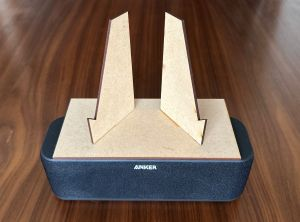
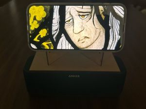

Mini Theater
いつもの部屋に、映画館のような感動を
映画館で映画を観るときの、あの特別な空気感や映像と音楽に包まれる感覚を日常の中でも楽しめるようにしたいと考えた。
01 スケッチ

02 作品

スピーカーと一体感のあるシンプルな形状に設計。

スマートフォンで映像を楽しみながら、スピーカーから流れる音によって、より映画の世界に入り込める空間。
特別な設備がなくても、日常の中に小さな感動を生み出せることを目指しました。
DXF FILE ↗03 調べたこと
【Fusionでの計測方法】今回の作品は立体的な構造にしたため、パーツ同士を正確にはめ合わせるための寸法調整が重要だった。
【MDFの厚みを考慮した設計】使用するMDFの厚さが2.5mmのため、パーツをはめ込む部分も厚みに合わせて2.5mmを基準に設計した。 組み立てたときにパーツ同士がずれないよう、寸法を意識した。 【スケッチでの寸法設定】Fusion360のスケッチ機能を使い、線や図形の長さや位置、間隔などを数値で指定した。 感覚だけで形を作るのではなく、寸法を計算しながら設計した。【計測機能の活用】Fusion 360の計測機能を使い、パーツの長さや距離などを確認した。 パーツ同士の位置関係やサイズが適切かを確認しながら調整した。 これらの機能を活用することで、見た目だけでなく実際に組み立てて使用できることを意識して制作した。